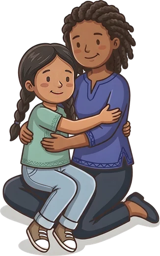

Autorégulation au quotidien
Des idées concrètes pour votre groupe
Accueil
Moi d'abord
Respire
Moi, l'adulte
Avec les enfants
Lire la situation
Moments de la journée
Corégulation
Le sensoriel
Je me pratique
Mon corps, mes sensations